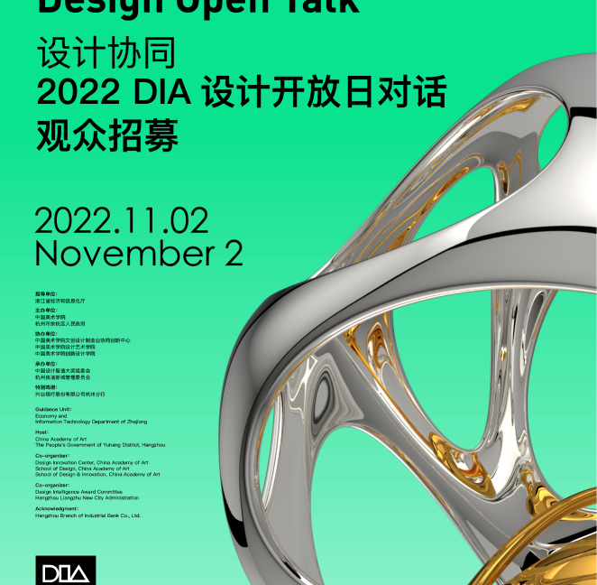
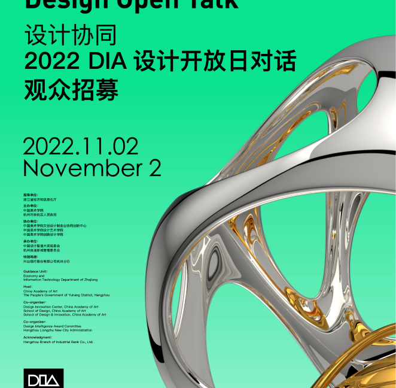
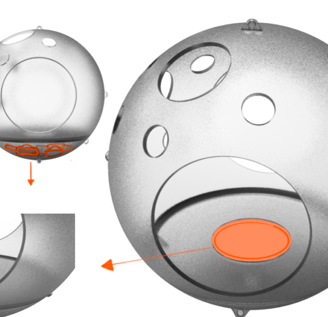
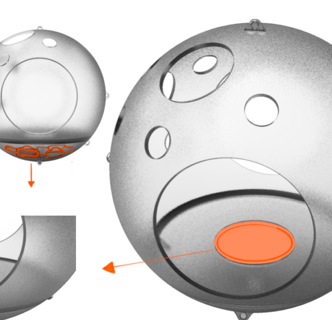

LUO SHAN
luoshan3398@qq.com
Hearing the Bullseye
2021-2022
How can we facilitate VI individuals to play together with sighted
individuals? In the VI community, social play plays a crucial role as it.
Family-centered simple sound shooting interaction game
2021-2022
A paper-based sound shooting game for both the blind and the sighted.
Will design disappear?
Will design disappear? It's a thought-provoking topic with a lasting
impact. The first time I heard this question was in 2023 when AI was gradually coming into the
public eye. I was overjoyed and sought out Professor Wang Yun to discuss a project called "AI
for Design" (simply put, it's about designing a universal model for design). He took a puff of
his cigarette, remained silent for a long time, and then asked, "Will design disappear?"
This project was later shelved, and at the time, I thought it was because, as an art and design student, I lacked technical skills. After all, how could design disappear? In ancient times, humans created sickles to harvest rice, and later, these sickles evolved into countless automated harvesters. Design uses technology to create objects, helping humans extend their conscious needs further and further, beyond the reach of their bodies, even transcending space and time...
Later, I officially became part of the historical river of evolution with AI. At that time, Dean Gao Shiming was emphasizing that there are two kinds of AI: Artificial Intelligence and Artistic Intelligence. With the vision of rebuilding design humanities and reinventing the everyday, I plunged into a booming AI startup company, looking for the answer to whether design would disappear. One weekend while working overtime, my colleagues from the marketing department and I were discussing the application needs suitable for an AI startup company, and suddenly I realized that if even the human need for the extension of consciousness was replaced, then design might really disappear... Later, we saw many interesting AI products not only automating our workflow but also automating our conscious needs, such as Dot, Earth2...
At the beginning of the year, I returned to the field of accessible design that I had been researching during my school days, hoping to make some different things in this field before I turn 30. This field is very special to me; it has always been what I think is most in need of humanity, sensibility, care, value, and purpose, most importantly, love for the unknown and the unnamable. Perhaps design will eventually disappear, perhaps design is just a brief existence in its history, perhaps humans on Mars only need AI to work, and the Nth generation of Earthlings are lying in chairs reminiscing about life on Earth with Vision Pro. But there is still a bit of fun, just like the poem mentioned in Liu Cixin's short story "Poetry Cloud" - "Ah ah ah ah ah, ah ah ah ah..." What an interesting poem, even high-dimensional beings cannot replicate art.
Here, I present some of my creative works since 2021. In my eyes, they are all that poem that cannot be replicated by AI.
This project was later shelved, and at the time, I thought it was because, as an art and design student, I lacked technical skills. After all, how could design disappear? In ancient times, humans created sickles to harvest rice, and later, these sickles evolved into countless automated harvesters. Design uses technology to create objects, helping humans extend their conscious needs further and further, beyond the reach of their bodies, even transcending space and time...
Later, I officially became part of the historical river of evolution with AI. At that time, Dean Gao Shiming was emphasizing that there are two kinds of AI: Artificial Intelligence and Artistic Intelligence. With the vision of rebuilding design humanities and reinventing the everyday, I plunged into a booming AI startup company, looking for the answer to whether design would disappear. One weekend while working overtime, my colleagues from the marketing department and I were discussing the application needs suitable for an AI startup company, and suddenly I realized that if even the human need for the extension of consciousness was replaced, then design might really disappear... Later, we saw many interesting AI products not only automating our workflow but also automating our conscious needs, such as Dot, Earth2...
At the beginning of the year, I returned to the field of accessible design that I had been researching during my school days, hoping to make some different things in this field before I turn 30. This field is very special to me; it has always been what I think is most in need of humanity, sensibility, care, value, and purpose, most importantly, love for the unknown and the unnamable. Perhaps design will eventually disappear, perhaps design is just a brief existence in its history, perhaps humans on Mars only need AI to work, and the Nth generation of Earthlings are lying in chairs reminiscing about life on Earth with Vision Pro. But there is still a bit of fun, just like the poem mentioned in Liu Cixin's short story "Poetry Cloud" - "Ah ah ah ah ah, ah ah ah ah..." What an interesting poem, even high-dimensional beings cannot replicate art.
Here, I present some of my creative works since 2021. In my eyes, they are all that poem that cannot be replicated by AI.
设计会消失吗？这是一个后劲很大的思辨话题，我第一次听到这个问题时，是2023年AI已经逐渐走向大众视野，我喜出望外的找王昀教授沟通中心可以做一个课题叫做"设计设计的AI"（简单来说就是设计一个设计的通用模型）。他却吸了口烟，沉默很久，抛出一句：“设计会消失吗？”。
这个课题后来不了了知，当时的我一度以为是自己作为艺术类的设计学生，不具有技术能力。毕竟设计怎么会消失呢？远古时期人类想要割水稻，才有了镰刀，后来这把镰刀变成了无数个自动化收割机。而设计利用技术造物，帮助人类把意识需求延伸的越来越远，超越了身体够得到的距离，甚至超越了空间和时间...
后来我正式卷入了和AI一起进化的历史河流里，当时高世名院长正在强调有两个AI，一个是Artificial Intelligence，另外一个是Artistic Intelligence。抱着重建设计人文，重新发明日常的愿景，我埋头栽进了一家正在风口上的AI初创公司，寻找设计是否会消失的答案。某一个加班的周末，我和市场部的伙伴在讨论符合AI创业公司落地的应用需求时，突然猛的发现，假如人类连思考意识延伸的需求都被替代了，那设计好像真的会消失···再后来我们看到了很多有意思的AI产品不仅在自动化我们的工作流，还在自动化我们的思考需求的意识，比如Dot、Earth2···
年初，我回归到在校期间我一直研究的无障碍设计领域，希望在30岁之前能在这个领域做出一些不一样的东西。这个领域对我来说很特别，它一直是我认为最需要人文，感性、关怀、价值与目的，最重要的，对于无名（unknown）和未知的爱（unnamable）。或许设计最终会消失，或许设计追其历史只是短暂的存在过，或许人类在火星上的繁衍也只需要让AI上班，第N代的地球人正躺在椅子上带着Vision pro来回忆地球上的生活。但是依旧存在着那么一点点趣味，就像刘慈欣的短篇小说《诗云》中提及的那首诗“啊啊啊啊啊啊，啊啊啊啊啊········”多么有趣的诗，连高维生物都无法复刻的艺术。
致此，我将2021年起的部分创作作品都呈现在这里，它们在我眼里都是那首无法被AI复刻的诗。
后来我正式卷入了和AI一起进化的历史河流里，当时高世名院长正在强调有两个AI，一个是Artificial Intelligence，另外一个是Artistic Intelligence。抱着重建设计人文，重新发明日常的愿景，我埋头栽进了一家正在风口上的AI初创公司，寻找设计是否会消失的答案。某一个加班的周末，我和市场部的伙伴在讨论符合AI创业公司落地的应用需求时，突然猛的发现，假如人类连思考意识延伸的需求都被替代了，那设计好像真的会消失···再后来我们看到了很多有意思的AI产品不仅在自动化我们的工作流，还在自动化我们的思考需求的意识，比如Dot、Earth2···
年初，我回归到在校期间我一直研究的无障碍设计领域，希望在30岁之前能在这个领域做出一些不一样的东西。这个领域对我来说很特别，它一直是我认为最需要人文，感性、关怀、价值与目的，最重要的，对于无名（unknown）和未知的爱（unnamable）。或许设计最终会消失，或许设计追其历史只是短暂的存在过，或许人类在火星上的繁衍也只需要让AI上班，第N代的地球人正躺在椅子上带着Vision pro来回忆地球上的生活。但是依旧存在着那么一点点趣味，就像刘慈欣的短篇小说《诗云》中提及的那首诗“啊啊啊啊啊啊，啊啊啊啊啊········”多么有趣的诗，连高维生物都无法复刻的艺术。
致此，我将2021年起的部分创作作品都呈现在这里，它们在我眼里都是那首无法被AI复刻的诗。


 

 
